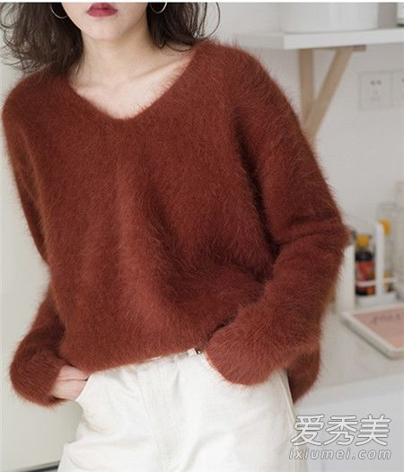
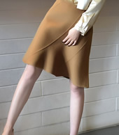
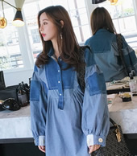

水貂绒起球怎么办 四个妙招get起来
我们都知道貂绒毛衣会掉毛，那么貂绒毛衣会起球吗？貂绒毛衣起球怎么处理？如果貂绒毛衣起球了，小编教你四个小妙招赶紧get起来！
貂绒毛衣起球吗
貂绒毛衣是羊毛、兔毛。貉子毛等毛混合而成的，就像羊毛会起球是正常现象。水貂绒毛衣穿久了会起球是正常现象。起球是绒线制品的共性。绒线织物在穿 着和使用过程中，突出织物表面的短小纤维易缠结成球，影响外观引起毡并，尤其是高档产品有贴身、柔软、滑爽的需求，这会增加这种趋势，起球与原料性能、纺 纱和染整工艺、编织结构、穿着方式有关。原料与纺纱、染色对起球的影响很复杂，其机理尚在探讨中，过分追求抗起球。
貂绒毛衣起球怎么处理
衣物出现起球现象之后，切忌用手生拉硬扯，正确的方法是在洗涤后用剪刀将起的绒球轻轻地剪下，在经过几次洗涤之后，随着一些松散的纤维脱落，衣物的 起球现象是会逐渐消失的。对局部较少的起球，可用手指轻轻拔去或用小剪刀剪去，用衣刷顺毛刷一下即可，对面积较大起球较多的，可先把 羊毛衫平 摊在平整的桌面上，用刷子按织物的针迹轻刷灰尘，拉直绷紧，用专用电动剃毛刀轻轻 地垂直电吸，剃去小球。

在清洗的时候应该先拍去衣服上的灰尘，然后在冷水中浸泡10-20分钟，接着再用中性洗涤剂在水中轻轻的揉搓衣物，但是千万不要将其揉成一团这样会 损坏衣服的结构。用洗衣机脱水时以半分钟为宜，将脱水后平铺在阴凉通风处晾干。不要在强日光下曝晒，以防止织物失去光泽和弹性以及引起强力的下降，另外， 存放时注意防虫蛀，严禁防蛀剂与貂绒衫直接接触，避强光。
看了上面的清洗方法不知道还在穿貂绒制品的你学会了怎样保护心爱的衣服了吗？对于我们经常穿着的衣服来说，合理的清洗可以让我们的更好的体验到优秀的舒适感，千万不要为省事图快。貂绒毛衣怎么清洗就讲到这里了。
编辑推荐:
-
水貂绒起球怎么办 四个妙招get起来
-
降温天怎么穿：帅气拉风的大衣搭配

运动风的帽衫+外套，超强混搭感
-
搭配示范：冬天的毛衣+夏季的裙装
- 
冬季穿搭示范：用小裙裙扮靓十二月
-
12月拒绝臃肿丑，大衣一定认真挑！
- 
别致衬衣显心机，精致妞从头到尾穿搭
-
女人爱质感羊绒衫，12月给你好气质